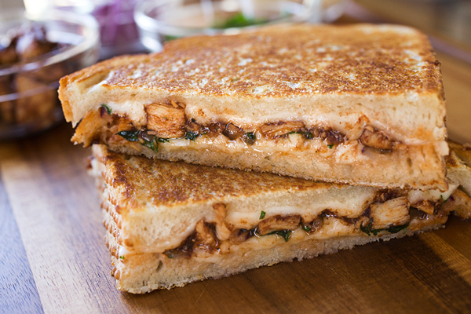

This BBQ Grilled Cheese is perfect for a late night snack or as a backyard BBQ party starter!
Whip them up any way you would do a normal grilled cheese, but they come with a twist!
- 2 Slices sourdough bread
- 2oz Cooked chicken
- 2 Slices favorite cheese
- 1 Tbs butter
- 2 Tbs favorite BBQ sauce
- Heat a skillet or flat top to medium heat.
- Butter one side of both slices of bread
- Once cooking surface is at temp, place 1 slice of bread onto surface, butter side down.
- Place 1 slice of cheese, chicken, BBQ sauce onto bread, top with last slice of cheese, then add the last slice of bread.
- Flip once bottom bread is crispy. Remove when other slice of bread is crispy. Serve and enjoy!